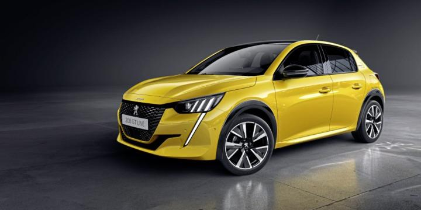

INFORMACIÓN
Resultado de imagen para fabricante de peugeot
Groupe PSA (siglas de Peugeot société anonyme) fue un fabricante de automóviles francés formado por las marcas Peugeot, Citroën, DS Automobiles, Opel y Vauxhall.
Este grupo fue el segundo mayor fabricante de automóviles de Europa, con el 15,4% del mercado. Desde enero de 2021 fue remplazado por Stellantis.
¿Quién es el dueño de Peugeot?
Armand Peugeot fue un industrial, pionero de la industria del automóvil y fundador de la empresa francesa Peugeot.a
Peugeot es una marca de automóviles francesa con más de 200 años de historia, especializada en la fabricación de turismos,
vehículos comerciales, automóviles de carreras, servicios de movilidad como alquiler de vehículos, bicicletas, scooters, así como útiles de cocina como saleros, pimenteros y
molinillos de café, propiedad de Stellantis.
Tradicionalmente, los automóviles franceses han gozado de una excelente imagen internacional, asociada a la óptima relación calidad-precio, la innovación, la excelencia
y la tecnología útil. En gran medida, la presencia de dos firmas francesas entre las más antiguas del mundo, Peugeot y Renault, ha contribuido poderosamente en ello.
